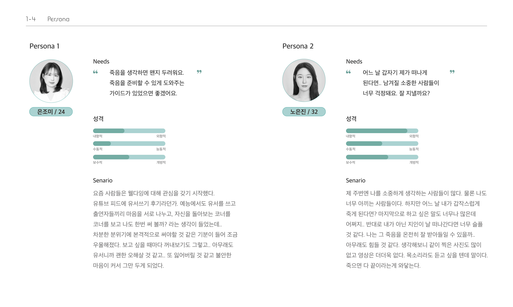
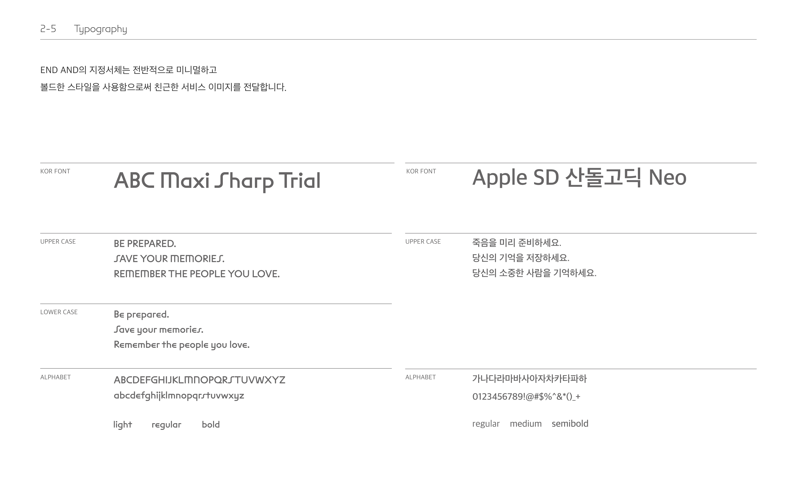
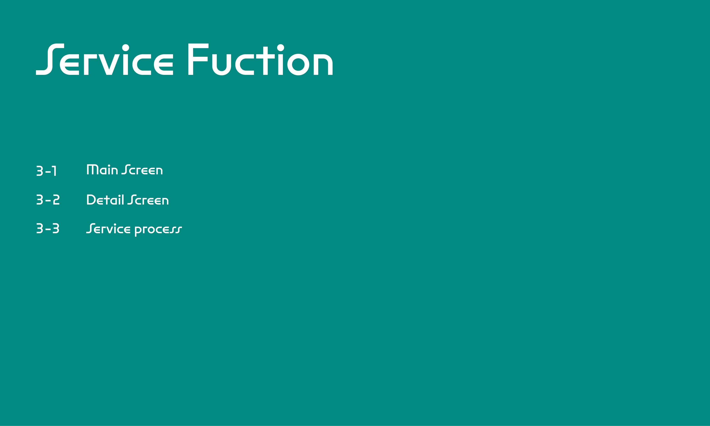

END AND
죽음을 준비하고, 떠난 사람을 추억할 수 있도록 도와주는 아카이빙 서비스 'END AND'
웰다잉(Well-Dying)은 삶을 능동적으로 마무리하고 죽음을 미리 준비함을 뜻한다.
고령화로 인한 각종 질병, 1인 가구의 확산 등 사회 현상과 함께 등장한 개념이다. 웰다잉을 실현하고 싶은 사람들이 많지만, 어떤 방법으로 실천할지 막막하고 두려움을 느낀다.
이 서비스를 통해 Ender는 웰다잉 교육 컨텐츠를 접하고 구체적인 실천법을 알아가며 두려움을 줄일 수 있다. 또한, 삶을 돌아보며 차근차근 죽음을 준비해 나가며 기억을 저장한다. 그리고 소중한 사람에게 보내고 싶은 기억을 상자에 모아 보관해 둔다. 이 상자는
자신이 세상을 떠난 후, 지정해 놓은 Ander에게
설정해 놓은 날짜에 전달된다. 이로써
남겨진 사람은 고인을 추억할 수 있다.
성은정 eunjoemeee@naver.com


